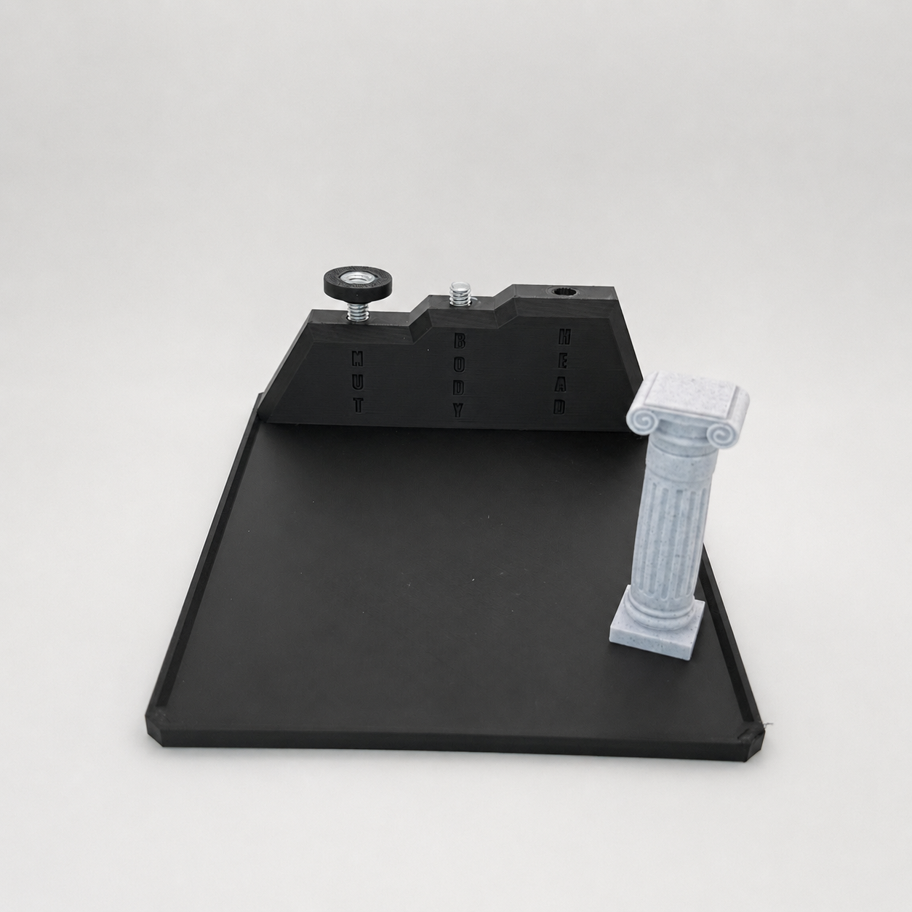
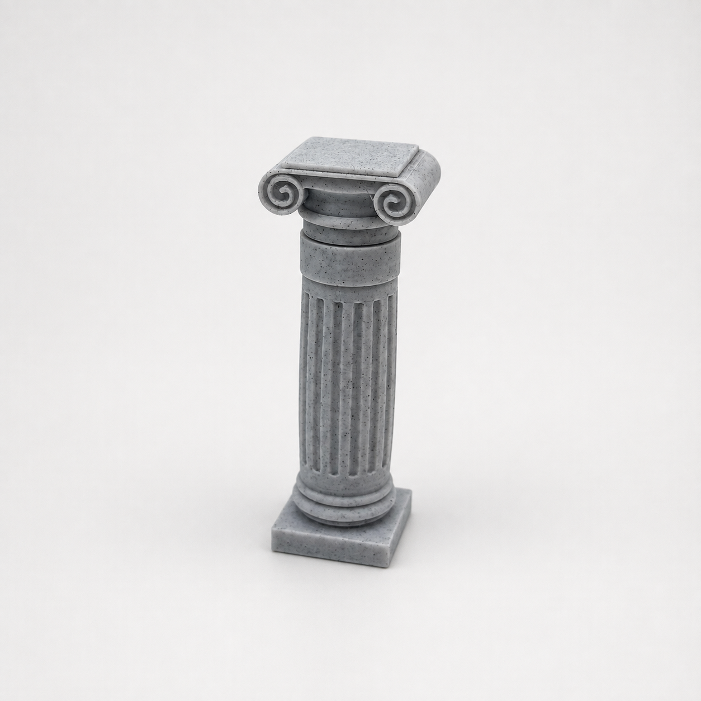
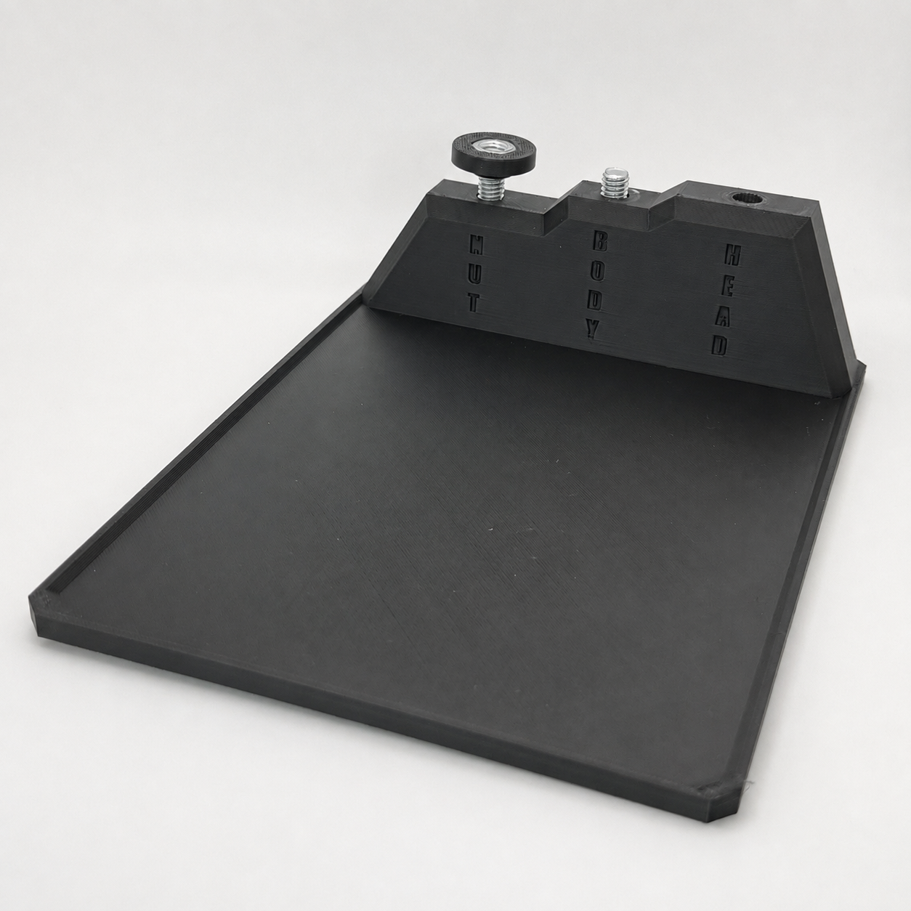
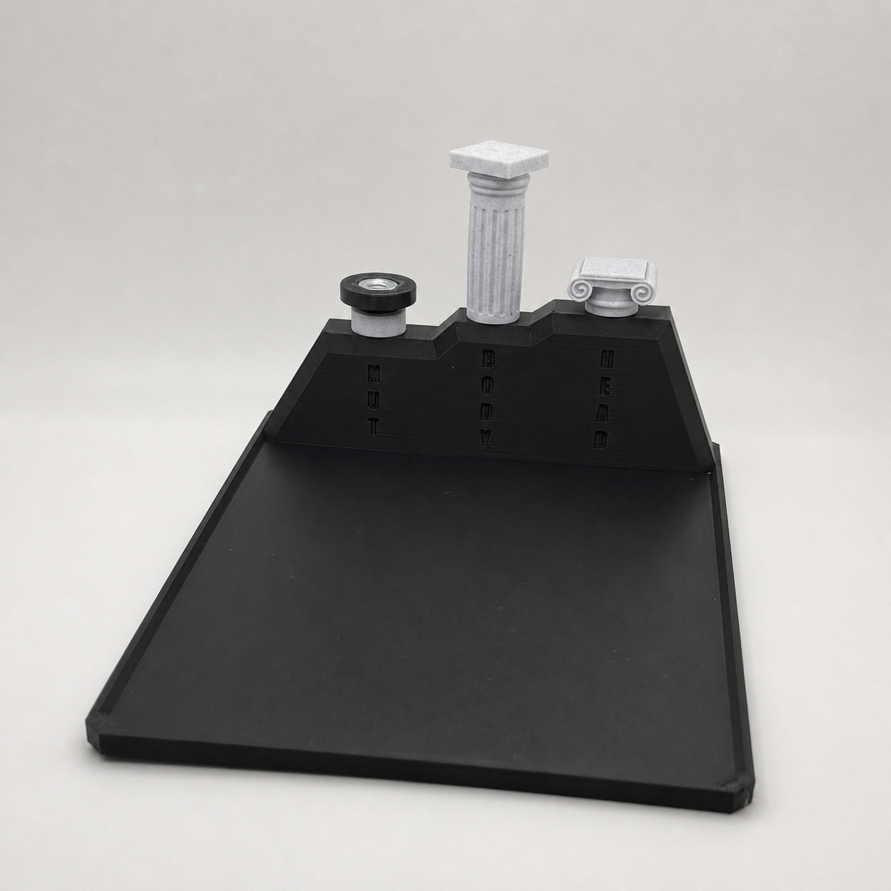

Custom Jigs & Fixtures for Assembly, Setup & Inspection
Have a repetitive production task or an existing fixture that needs improvement? FixtureSprint designs, prototypes, tests, and delivers practical tooling solutions. We use rapid FDM iteration where it fits and metal components when the application requires them.
- Custom design, prototyping, and testing
- Rapid iteration with practical engineering
- Written project scope and quote before work begins

Case Study
From Manual Holding to Repeatable Batch Assembly
Result: a 46% reduction in hands-on assembly time per unit — measured across three timed assemblies, before vs. after the fixture.
A commercially sold GPU support product required three bonded components to be manually aligned and held under pressure while the adhesive cured. Because the components had to be held by hand during the full cure cycle, the operator could not begin another assembly until the bond had set—which limited throughput and made alignment inconsistent from unit to unit, since "by hand" is never perfectly repeatable.



The Fixture
The custom fixture:
- Locates and secures three different components in the correct relative position
- Maintains that alignment under consistent clamping pressure through the full cure cycle—no hand pressure required
- Frees the operator to begin another assembly the moment the first is loaded and clamped, instead of waiting out the cure
- Supports repeatable production across shifts and operators, since the fixture—not the operator's hands—sets the alignment
Across three timed assemblies, average hands-on assembly time fell from 142 seconds to 77 seconds. The fixture saved 65 seconds of operator time per unit, a 46% reduction.
Measurement note: this was a founder-built engineering project used to validate the fixture-design approach—not a paid FixtureSprint client engagement. Figures reflect three timed assemblies by one operator; results on your application will depend on its specific requirements.
Why Choose Us
Tooling Built Around a Defined Problem, Not a Print File
Engineering handled for you
We work from the production requirement through design, prototyping, and validation—you don't need a finished CAD model to start.
Rapid design iteration
FDM allows practical geometry and functionality to be tested and refined quickly when it's the right method for the job.
Measurable objectives
Every project begins with a defined production problem and agreed functional requirements.
Clear project scope
Deliverables, testing expectations, revisions, pricing, and material requirements are documented before work begins.
About
The Engineer Behind FixtureSprint
FixtureSprint is engineering-led, not outsourced. Projects are scoped, designed, and tested by a mechanical engineer with hands-on experience building practical fixture and tooling solutions—based in the Detroit, Michigan area, close to the manufacturers this work serves.
Every project starts from the actual production problem on your line, not a standard catalog part, and is reviewed on its own merits before any design work begins. Drawings, photos, CAD, and anything else you share are used only to evaluate and scope your project and are kept confidential.
Questions before reaching out? Email hello@fixturesprint.com.
Applications
Production Tooling Applications
- Assembly and alignment fixtures
- Adhesive-curing fixtures
- Part nests and holding aids
- Drill and positioning guides
- Go/no-go gauges
- Masking and inspection aids
- Ergonomic production tools
- Low-volume replacement tooling
- Existing fixture improvements and redesigns
These are possible applications, subject to engineering review for your specific tolerances, environment, and materials—not guaranteed capabilities for every case. FDM is one manufacturing method we use, not the only one; machined metal components can be incorporated through outside suppliers where the application calls for them. High-load, safety-critical, extreme-temperature, severe-wear, or tightly certified applications are screened out before a project begins.
How It Works
Four Steps From Problem to Working Tool
-
1
Tell Us About Your Problem
Describe the repetitive task, existing fixture, or production requirement. A short explanation is enough to begin. Photos, drawings, CAD, and videos are optional.
-
2
Review and Define the Solution
We review the application, discuss functional requirements, and determine whether a practical tooling solution is appropriate.
-
3
Design, Prototype, and Test
We develop and evaluate the agreed fixture design, using FDM prototypes and other manufacturing methods as appropriate.
-
4
Deliver the Agreed Tooling
Receive the finished tooling and agreed documentation after the defined requirements and validation steps have been completed.
The Offer
Rapid Production Tooling Sprint
- Initial tooling discussion and application review
- Clearly defined production problem
- Custom engineering and fixture design
- Prototyping and functional evaluation
- Agreed revisions and deliverables
- Appropriate fabrication or outsourced components
- Written scope and pricing before work begins
Project pricing and timeline are scoped to your specific application and provided in writing before any work begins.
Discuss Your Tooling ProblemContact
Tell Us About Your Tooling Problem
Tell us what you need to hold, align, assemble, position, or inspect—or what your current fixture isn't doing well. A brief description is enough to start.
Prefer email? Reach us directly at hello@fixturesprint.com.
FAQ
Frequently Asked Questions
Can you design a fixture if we don't have CAD?
Yes. A description of the problem, along with a few photos or rough dimensions, is enough to start. CAD, drawings, or samples help but aren't required.
Can you improve or duplicate an existing fixture?
Yes. If you can share a sample, drawing, photo, or video of the existing fixture, we can evaluate modifying or rebuilding it to fix what isn't working.
What types of production tooling can you make?
Assembly and alignment fixtures, adhesive-curing fixtures, part nests and holding aids, drill and positioning guides, go/no-go gauges, masking and inspection aids, ergonomic production tools, low-volume replacement tooling, and improvements to existing fixtures.
Are your fixtures always 3D printed?
No. FDM is one manufacturing method we use because it's fast for iterating on geometry and functional testing, but it's not the only method. Many designs mix printed and machined or off-the-shelf components depending on what the application requires.
What if the application requires metal?
Metal components can be incorporated and, where needed, machined or fabricated through outside suppliers. We'll flag this during the application review if your requirement calls for it.
What information is needed to get started?
A description of the repetitive task, existing fixture, or production requirement. Photos, drawings, CAD, or a short video are helpful but optional—send what you have.
How are project pricing and timelines determined?
Every project is scoped individually based on the application and requirements. Pricing and an estimated timeline are provided in writing before any work begins.
What testing and revisions are included?
Prototypes are physically tested against the functional requirement agreed on during scoping. The number of included revisions is documented in your written scope, since it varies by project complexity.
Will we receive the CAD/design files?
File delivery is documented in your written scope and quote, since it depends on the specifics of the agreement. Ask during the initial discussion if this matters for your project.